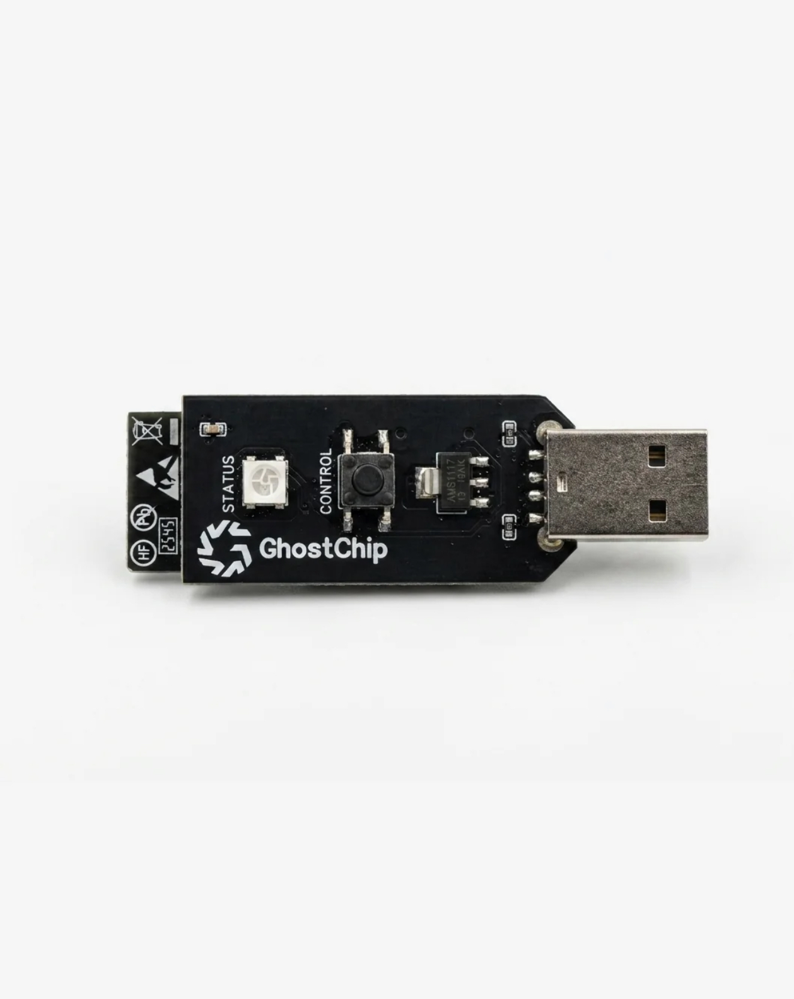
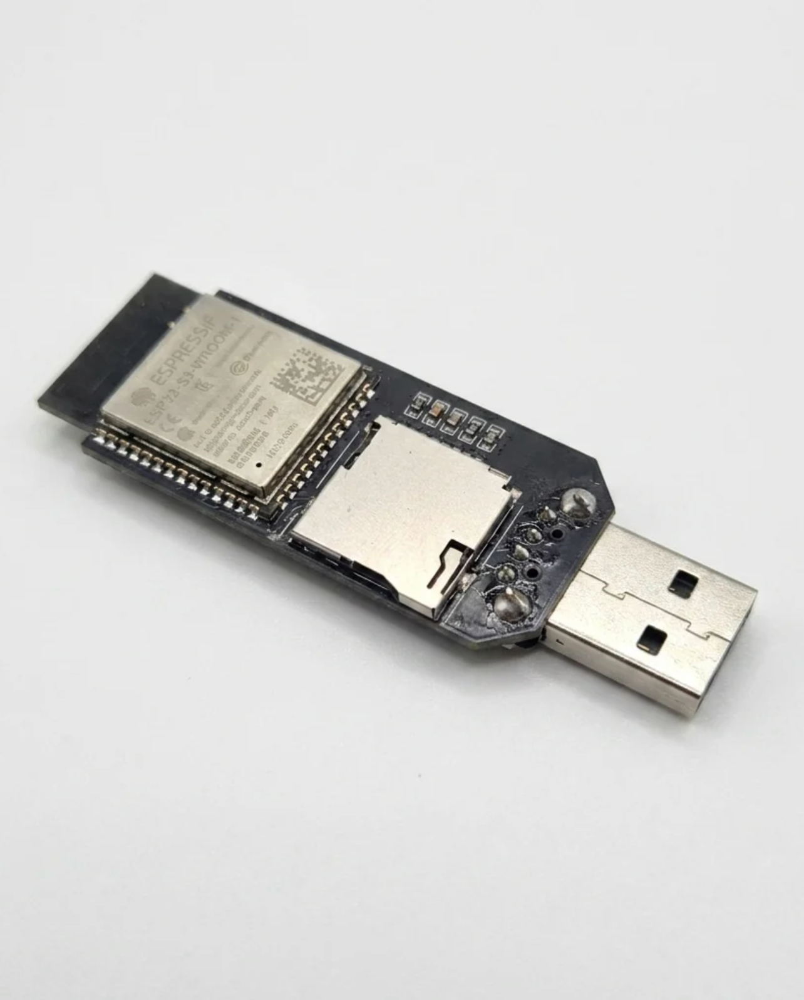

LOCAL DEVICE CONSOLE
Dashboard
ONLINE ghostchip.local
ESP32-S3 • USB • Wi-Fi • BLELearn your
Learn your
GhostChip.
A modern control and learning interface inspired by the GhostChipUI concept, with a safe lab-focused toolkit.
ESP32-S3
WROOM-1
GHOSTCHIPWROOM-1
HARDWARE
Interactive 3D Device
USB-AESP32-S3
WROOM-1●GHOSTCHIP
WROOM-1●GHOSTCHIP
microSD
STORAGE
STORAGE
Hardware Map
ESP32-S3Main MCU + Wi-Fi + BLE + USB
USBPower / native USB interface
GPIO19USB D−
GPIO20USB D+
microSDStorage; verify exact PCB wiring
⚠ Never put 5 V directly on ESP32 GPIO.


SAFE LAB
SIMULATION ONLYScript Lab
// simulator output appears here
DuckyScript learning referenceDELAY nSTRING textENTERREM commentREPEAT n
AUTHORIZED LAB
Network Lab
Learn scanning concepts and connect only to your own test router.
Study advertisements, services and characteristics.
Use Wireshark in an isolated lab to understand traffic.
// lab status
MICROSD
Storage Explorer
📁 /
📄 config.txt project settings
📄 lab-log.txt test data
📁 projects/ your projects
ROADMAP
Learning Center
GPIO
LEDs, buttons, inputs, outputs and PWM.
Wi-Fi
Connect to your own router and build a local web server.
BLE
Advertisements, services and characteristics.
USB
Descriptors, enumeration and HID concepts.
microSD
Read, write and log project data.
Cyber Lab
Practice only in isolated, authorized environments.
CONFIGURATION
Settings
This static GitHub version is a UI/demo. It does not connect to or control a physical ESP32 automatically.